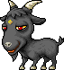

Lv. 35 · #9600005
흑염소
이 근처에 서식하는 흑염소는 희귀종으로 알려져 있다. 새까만 털과 기묘하게 붉은 눈이 약간 무서워 보인다. 하얀 염소보다 훨씬 강해서 뒷발차기의 위력이 만만치 않다. 만약 이 검은 염소를 화나게 하면, 끈질기게 뒤쫓아 공격할 것이다.
스탯
레벨 35- HP
- 1,200
- MP
- 50
- EXP
- 71
- 넉백 가능 데미지
- 1+
- 물리 데미지
- 120
- 마법 데미지
- 0
- 물리 방어력
- 60
- 마법 방어력
- 50
- 속도
- -10
- 35레벨 에서의 필요 명중
- 43.992
- 메소
- 262.5
- 속성관계
- 미기재
- 체경비
- 16.90
- 형태
- 동물형
출현 지역
출현 맵 3개맵 이름을 누르면 메이플노트의 맵 정보가 열립니다.
드롭 테이블
전체 18개| 아이템 | 아이템 ID | 드롭 확률 |
|---|---|---|
| 검은 뿔 | 4000191 | 40% |
| 뻣뻣한 깃털 | 4003004 | 4% |
| 동물의 가죽 | 4000021 | 3% |
| 하얀 포션 | 2000002 | 1% |
| 파란 포션 | 2000003 | 1% |
| 활전용 화살 | 2060000 | 0.8% |
| 석궁전용 화살 | 2061000 | 0.8% |
| 아다만티움의 원석 | 4010003 | 0.3% |
| 에메랄드의 원석 | 4020003 | 0.3% |
| 주스팅 | 1002023 | 0.01% |
| 금 링 귀고리 | 1032004 | 0.008% |
| 버드빌 | 1412005 | 0.008% |
| 망토 마법 방어력 주문서 10% | 2041002 | 0.008% |
| 블루 문라이트 | 1051025 | 0.007% |
| 아쿠아 브레이스 | 1082071 | 0.007% |
| 그린 하프슈즈 | 1072108 | 0.007% |
| 한손둔기 공격력 주문서 60% | 2043201 | 0.004% |
| 활 공격력 주문서 10% | 2044502 | 0.004% |
조건에 맞는 드롭 아이템이 없습니다.
확률은 메이플노트에 게시된 값입니다. 아이템 이름을 누르면 원본 아이템 정보가 열립니다. 과거 버전 데이터이므로 실제 메이플랜드와 다를 수 있습니다.